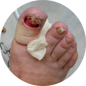

Грибок – это опасная инфекция
которая угрожает вам и вашим близким, ведь с каждым днем грибок приводит к:
-

Сложным формам аллергии
Может появится сильная реакция на на привычную пищу, одежду, средства гигиены
-

Потере ногтя и ампутации пальца
После полного разрушения ногтя грибок распространяется на палец, что приводит к его ампутации
-

Тяжелому поражению внутренних органов
Может привести к повреждениям мозга, слепоте, отказу печени, почек и сердца
Статистика: каждые 60 секунд врачи диагностируют опасные поражения внутренних органов, вызванные грибком, у 1-го пациент
Почему большинство средств против грибка малоэффективны
-
Чудо-средства
Обещают, что избавят от грибка меньше, чем за месяц, хотя это невозможно.

Но
Ноготь – это роговой слой кожи. Он не имеет живых клеток. Часть ногтя, которая уже поражена грибком, не может выздороветь до полного его отрастания. Единственный способ вылечить грибок – подавлять его распространение все время, пока ноготь не отрастет заново. Для этого требуется 4-6 месяцев.
-
Наружные средства
Способны устранить внешние проявления грибка.
(кремы, лаки, пластыри)
Но
Очаг заражения находится под ногтевой пластиной, а наружные средства не способны его достичь - они действуют только на на верхнем слое ногтя, поэтому не способны избавить от грибка. Для повышения их эффективности рекомендуется спиливать ноготь полностью , но это больно, некрасиво и совершенно не дает гарантий выздоровления.
-
Внутренние средства
Убивают грибковую инфекцию в организме.
(таблетки, саше, капли)
Но
Могут подействовать только при длительном использовании (6 - 8 месяцев). За это время внутренние средства в 93% случаев наносят серьезный ущерб печени , вызывают сыпь, отеки, диарею, рвоту. К тому же, каждое средство эффективно только против одной группы грибка из 4000 видов.
ВЫВОД
Даже если вы используете наружные и внутренние средства одновременно, это не гарантирует избавления от грибка: они могут конфликтовать между собой по составу и блокировать действие друг друга или быть неэффективными против вашего типа грибка.
Почему таблетки Микоцин от грибка так эффективны?
Другие средства не дают полную защиту от грибковых инфекций и могут быть опасны
-
Кремы и мази
Не лечат грибок, потому что не проникают в ногтевую пластину. Только временно избавляют от симптомов инфекций. Могут вызвать сильную аллергию и раздражения на коже.
-
Народные методы
Помогают только в редких случаях. Могут причинить вред коже и ногтям. Не предотвращают повторные заражения грибком.